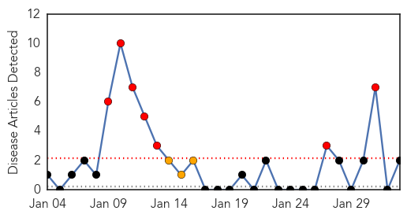
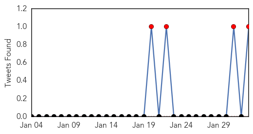
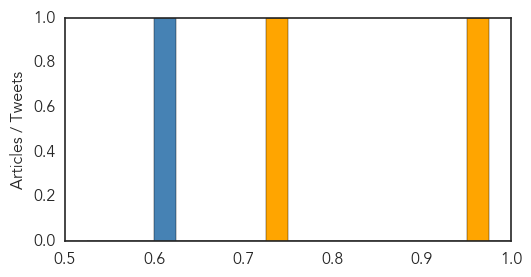

Ebola
30-Day Web Trend
9 alerts, 0 warnings

30-Day Twitter Trend
0 alerts, 0 warnings

Article Locations

Article Confidences

Top Articles:
-
No articles found for Feb 02, 2014
Top Tweets:
-
No tweets found for Feb 02, 2014
Cholera
30-Day Web Trend
7 alerts, 3 warnings

30-Day Twitter Trend
4 alerts, 0 warnings

Article Locations
Article Confidences
Top Articles:
Top Tweets:
- 0.606
- Talk about underreporting: WHO estimates 3-5 m annual cholera cases; in 2012 ~245000 cases reported tp them. What's the real number?